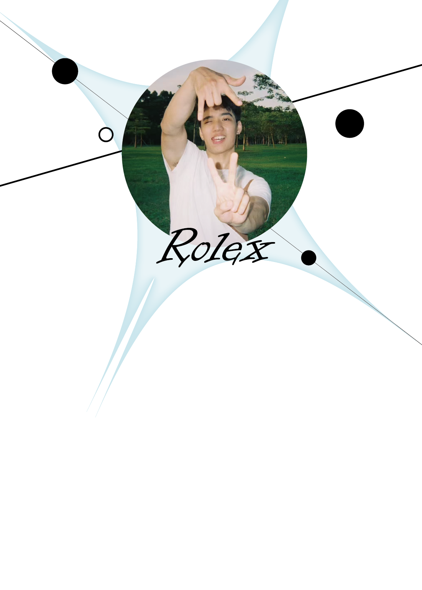

生产环境在跑的 AI 短视频流水线：control-plane + workers + Web 前端
516 commitsprovider-neutral 科研 agent 系统：skills · typed artifacts · 确定性 CLI
226 commits给纯文本 coding agent 的视觉桥 — 把图片译成 agent 可读的世界
GPL-3.0一个视频，一键分发抖音 / 小红书 / 视频号
124 commitsmulti-provider AI proxy rotator，已发布 npm
npmCS Master '29 · Rank 1/68
🎓旧号被错误封禁，申诉中 — 这里是我的新家，作品照常营业
✉️数学训练出身，做 production-grade AI engineering：科研 agent 系统、coding-agent 工具、跑在生产上的内容流水线。SYSU CS Master '29 · Rank 1/68.